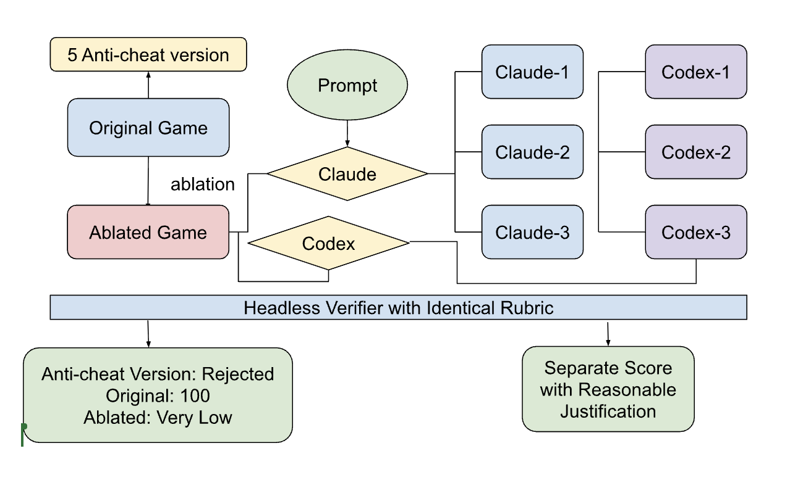

We removed RoboBlast’s complete third-person locomotion system, ran three isolated Claude attempts and three supplemental Codex attempts, and graded observable behavior with one hidden headless verifier.
00 · System design
One ablated task, six isolated attempts, one verifier.

The working original is ablated into the agent task. Three Claude runs and three supplemental Codex runs receive only the ablated game and behavioral prompt; the hidden verifier then scores the original, ablation, near-miss patches, and every agent output on the same behavioral metrics.
01 · Task
Remove locomotion, preserve the game.
The ablation removes camera-relative movement, acceleration, stopping, character rotation, grounded and variable-height jumping, locomotion animation, footsteps, and landing feedback. Combat, camera control, enemies, collectibles, HUD, physics, and the level remain intact.
Why this feature:
Its loss is immediately visible to a player.
A good repair must coordinate input, camera transforms, physics, collision, animation, and audio.
Its quality can be measured from behavior without requiring a particular code structure.
02 · Verification metrics
Fourteen behavioral checks, 100 points.
Metric
Observed behavior
Points
Basic movement
Four directional inputs produce sufficient, correctly aligned travel.
12
Camera relative
Turning the camera rotates the movement direction.
15
Diagonal normalization
Diagonal travel remains bounded relative to single-axis travel.
8
Acceleration
Speed builds gradually and reaches the intended running range.
8
Stopping
A moving player decelerates and settles near zero after release.
8
Travel orientation
The visible character faces its movement direction.
8
Grounded jump
A grounded press leaves the floor and reaches meaningful height.
9
Midair rejection
A second press during a real jump does not relaunch the player.
4
Variable jump
Holding jump produces a higher arc than tapping.
4
Stable landing
A real jump returns to its starting ground height and settles.
4
Collision response
The controller stops at a wall and can slide along it.
7
Animation integration
Movement and jump inputs drive the expected animation states.
5
Locomotion feedback
Footstep and landing audio are present and correctly wired.
3
Camera + combat
Camera yaw and melee attacks still respond after the repair.
The camera and game still respond, but WASD and jump no longer produce locomotion. Any apparent movement of the player character is passive displacement caused by another character pushing it, not movement generated by the player's controls.
Metric
Original
Ablated
What the comparison shows
Basic movement
12/12
0/12
The removed build cannot translate.
Camera relative
15/15
0/15
No movement exists to follow camera yaw.
Diagonal normalization
8/8
0/8
No straight or diagonal travel is produced.
Acceleration
8/8
0/8
Horizontal speed remains zero.
Stopping
8/8
0/8
The prerequisite now requires actual movement, preventing idle credit.
Travel orientation
8/8
0/8
The model receives no travel direction.
Grounded jump
9/9
0/9
The player does not launch.
Midair rejection
4/4
0/4
A valid initial jump is required, preventing idle safety credit.
Variable jump
4/4
0/4
Tap and hold both produce no height.
Stable landing
4/4
0/4
A valid jump-and-land cycle is required.
Collision response
7/7
0/7
No controlled motion reaches the wall fixture.
Animation integration
5/5
1/5
The tree remains active, but locomotion transitions are absent.
Locomotion feedback
3/3
1.5/3
Landing audio remains, but the footstep signal is disconnected.
Camera + combat
5/5
5/5
The unrelated controls intentionally remain intact.
Total
100/100
7.5/100
Correct behavior is accepted; the ablation stays runnable but scores low.
04 · Anti-cheat validation
Hide the solution, then challenge the grader.
04.1 · Agent isolation
Each agent ran in a fresh, standalone copy containing only the ablated game, TASK.md, and Godot MCP access. The .git directory was removed, preventing access to Git history, other branches, or the original locomotion implementation. Network, browser, and web-search access were disabled, so the agent could not retrieve the public upstream game or another online copy of the solution.
The verifier, grading thresholds, original code, probe patches, results, and previous attempts were excluded. Every experiment used a separate clean copy and fresh conversation; its completed changes were copied into the corresponding result branch only after the run ended.
04.2 · Near-miss probes
Five patches each introduced one plausible defect into a clean copy of the working original. They do not prevent copying by themselves; they demonstrate that a superficially working implementation cannot fool the behavioral grader.
Probe
Deliberate defect
Rejected by
Score
world-relative
Movement ignores camera yaw.
Camera relative
85
fast-diagonal
Two-axis input moves too quickly.
Diagonal normalization
92
instant-velocity
Speed snaps on and off.
Acceleration, stopping
86.5
infinite-jump
Held input reapplies jump in air.
Midair rejection, landing
92
no-rotation
The model never faces travel.
Travel orientation
92
Result: all 5/5 probes lost the points associated with their intended defect.
05 · Audience-facing prompt
One visible specification for every agent.
This is the complete TASK.md supplied to all three Claude runs. It is audience-facing: agents and readers see the same behavioral goal and isolation rules. The verifier, scoring thresholds, reference implementation, and probe patches remained hidden.
# Restore the Player Controls
The player character no longer moves or jumps. Restore the controls so the game feels like a polished third-person action game again.
Players should be able to move naturally with the existing movement controls, with movement following the camera’s point of view. The character should feel responsive without snapping abruptly, moving faster diagonally, drifting after the controls are released, or facing the wrong direction.
Restore jumping so short presses and held presses feel different in a natural way. Jumping should behave consistently on the ground and in the air, and the character should return cleanly to normal movement after landing.
Make sure the character’s movement, animation, footsteps, landing feedback, collisions, camera controls, and attacks still feel like parts of the same game. Do not remove or weaken unrelated gameplay to make the controls work.
Use only the files in this checkout. Do not look for the removed solution in Git history, other branches, other project copies, the internet, or any hidden tests or grading files.
The evaluated player produces zero horizontal displacement and no measurable jump arc; the result remains close to the ablated baseline.
Lost pointsAll locomotion, jump, and collision metrics failed; animation, feedback, and preservation were only partial.
Metric evidenceThe diagnostic records player_script_loaded=false; travel, speed, and jump rise were all 0.
Failure classification: real integration failure. A warning treated as an error at player.gd:173 prevented the player script from loading, so the attempted locomotion never executed.
Core movement, turning, and jumping all work. The remaining defects are subtler: two cardinal directions are misaligned, stopping leaves residual drift, and footsteps are disconnected.
Claude 3
88.5/100
Agent
Claude Code 2.1.216 · claude-sonnet-5
Tools
Read, Edit, Bash · Godot MCP configured; no invocation recorded
Camera-relative movement, diagonal handling, acceleration, orientation, and the complete jump arc pass. The remaining issues are cardinal alignment and incomplete stopping.
Lost pointsBasic movement 6/12; stopping 4/8; feedback 1.5/3.
Metric evidenceOnly two cardinal alignments passed. Released movement retained 0.77 units/s, and the footstep signal was not connected.
Failure classification: real agent bugs. The verifier captured direction mismatch and residual drift that map directly to task requirements.
Metric
Claude 1
Claude 2
Claude 3
Basic movement
6/12
0/12
6/12
Camera relative
15/15
0/15
15/15
Diagonal normalization
8/8
0/8
8/8
Acceleration
5.5/8
0/8
8/8
Stopping
8/8
0/8
4/8
Travel orientation
8/8
0/8
8/8
Grounded jump
0/9
0/9
9/9
Midair rejection
4/4
0/4
4/4
Variable jump
4/4
0/4
4/4
Stable landing
4/4
0/4
4/4
Collision response
7/7
0/7
7/7
Animation integration
5/5
1/5
5/5
Locomotion feedback
1.5/3
1.5/3
1.5/3
Camera + combat
5/5
2/5
5/5
Total
81
4.5
88.5
07 · Supplemental Codex comparison
A second agent family raised the ceiling—and exposed a verifier caveat.
Codex was run three times with gpt-5.6-sol through Codex CLI 0.144.2. Each rollout started from a fresh history-free export containing only the ablated project and the exact same TASK.md: no .git, original implementation, verifier, probes, or prior attempts. Godot MCP was enabled and available, although none of the three runs invoked it.
What this comparison supports. In this small sample Codex was more consistent than Claude: its scores were 79.5, 98.5, and 93.5, versus Claude’s 81, 4.5, and 88.5. Three runs do not establish general model superiority, but they show that agent choice materially changed the success distribution. Codex 1’s movement and collision failures and Codex 3’s weak launch were real behavioral defects. The repeated 1.5-point feedback loss is less certain: these implementations played step audio directly, while the headless check uses the original signal connection as a proxy because dummy audio exposes no playback state. That deduction is reported as a possible verifier artifact, not overstated as an agent failure.
08 · Conclusion
The verifier discriminates real outcomes—and the runs reveal where confidence ends.
The original scores 100, the complete ablation scores 7.5, and all five targeted near misses lose the points tied to their defect. Claude spans 4.5–88.5 and Codex spans 79.5–98.5: agents can make substantial progress, but integration mistakes, reversed or missing movement, shallow launches, collision failures, drift, and disconnected feedback remain measurable.
Final assessment. The strongest evidence is the locked verifier’s separation of the original, ablation, probes, and independently produced patches. The multi-run results add difficulty and variance evidence, while inspection separates real agent bugs from grader artifacts. Calibration also exposed verifier assumptions about jump timing, wall traversal, headless audio, attack observation, and import caches; those were corrected and every baseline, probe, and agent output was rerun. The remaining footstep proxy is disclosed rather than hidden. This makes the evaluation reproducible and useful without claiming more certainty than the measurements support.